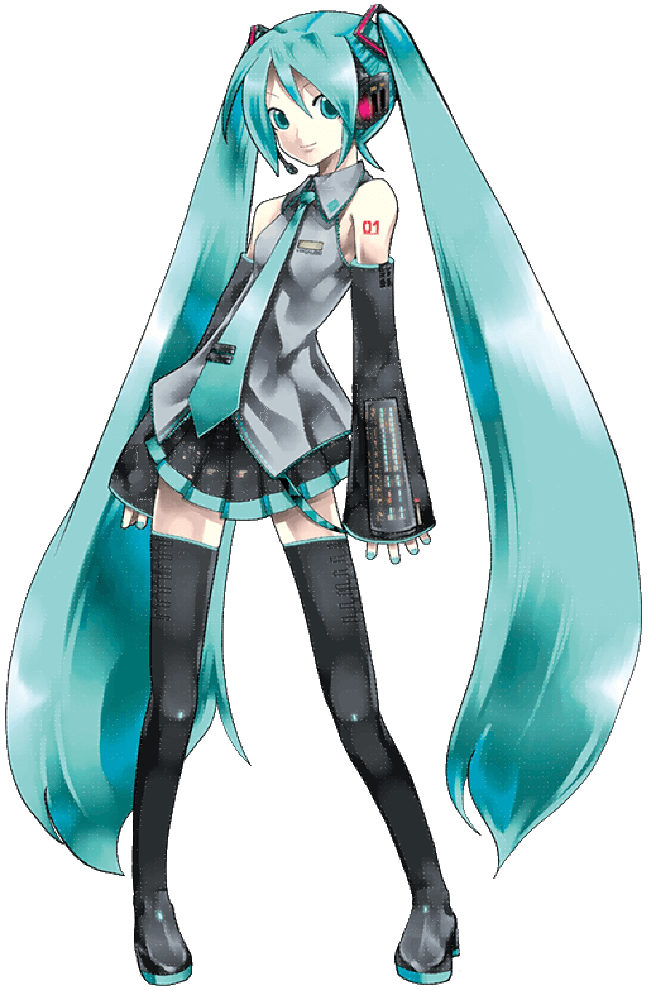
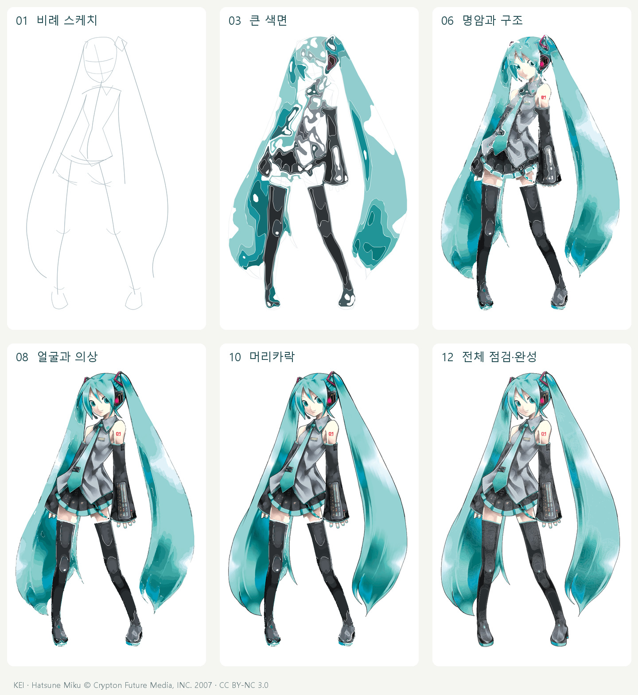

1,600개 벡터 패스 · 12개 제작 배치 · 4분 52초 전체 영상
비례 스케치에서 시작해 큰 색면, 명암, 구조와 세부 묘사를 거쳐 완성하는 과정을 담았습니다. 각 배치의 렌더링 화면을 확인한 후 다음 작업을 결정했습니다.
HTML 재생기는 파일 하나로 오프라인 실행됩니다. 구간 탐색, 속도 조절, 단계 선택, 얼굴·소매 확대를 지원합니다.
1920×1080 · H.264 · 24fps · 4분 52초 · 무음

최종 SVG에는 정확히 1,600개의 실제 <path>가 있습니다. 스케치 71획과 밑칠 722개는 제작 과정에만 포함됩니다. 전체 재생 동작은 2,393개입니다. 같은 색의 가까운 하위 윤곽을 하나의 복합 패스로 묶었으며, 비트맵을 삽입하거나 숨긴 요소로 수량을 채우지 않았습니다.
<path>
이 영상은 작업 중 보존한 SVG 배치를 바탕으로 만든 드로잉 시뮬레이션을 실제 브라우저에서 녹화한 것입니다.
SVG·영상 검증 · 재생기 검증 · 녹화 기록 · 제작·재현 문서 · 파일 해시